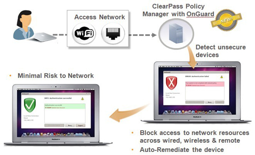
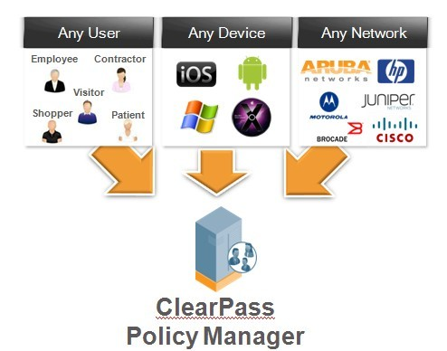

无线BYOD来临 Aruba安全管理两手抓
2012-03-30
ZDNET至顶网网络频道 3月30日 北京报道（文/李超）：近日，Aruba公司在北京举行了主题为：Aruba Networks BYOD解决方案ClearPass产品发布会。会上Aruba中国分公司总裁徐勇介绍，“Aruba成立至今，已经有10年的历史，主要推出无线接入产品及安全解决方案，在802.11N标准发布后，Aruba推出了自己的终端管理软件，直至今天推出以BYOD(Bring Your Own Device)为理念的接入解决方案，该方案解决当前企业中IT管理面临的重要问题，因为BYOD概念的提出给全球带来的挑战性是一致的。”那么究竟什么叫BYOD，对客户的意义和对中国市场的意义又是什么?Aruba全球副总裁、亚太区总裁Gary Jackson做出了如下介绍。
Aruba Networks亚太及日本地区副总裁Gary Jackson
Gary Jackson讲到，“BYOD(Bring Your Own Device)即是指携带个人的设备进行办公的一种方式。2010年BYOD所针对的无线终端几乎都是苹果的iOS设备。而现在已经有很多种类的无线终端出现，包括iOS、Android、windows、ultrabook等等，通过市场统计得知不同的无线终端占有率，目前iPad有将近60%的市场占有率，反应出个人无线终端设备在市场中占有率的持续增长，必将对BYOD产出重要意义。而平板电脑和传统PC在市场占有率方面已接近持平状态，这意味着越来越多的企业将会开始使用平板电脑取代传统PC在企业当中完成所需的应用。”
Aruba Networks中国分公司总裁徐涌
Gary Jackson继续讲到，“在BYOD实施过程中，首先遇到两个问题，第一，如何保证网络和用户的安全，由于很多不同的设备需要进入到企业内网中，要通过什么方式鉴别使用者和无线终端的安全性;第二，在众多无线终端接入网络的情况下，如何降低企业的IT管理成本。基于以上两个问题，Aruba推出了针对自带终端设备的ClearPass解决方案。该方案的主要特点是无论前端网络采用的是无线网络，或者有线局域网络，甚至是架设在分支机构的VPN网络，ClearPass都可以通过后端接入层提供有效的管理方案。”
ClearPass 跨平台应用
ClearPass这种跨平台跨网络结构的应用特性，很大提升了其移动管控的能力。ClearPass能够实现跨平台应用，兼容多家网络厂商的设备和架构，这都要得益于开放的标准，Aruba通过这些开放标准才可以做到跨网络平台的应用。例如思科如果要做到这点，只能针对思科自己的网络架构，因为思科的网络结构并不是完全的开放标准体系。如果某企业有线网络使用的是HP的接入层交换机，无线网络用思科的交换机，Aruba ClearPass可以做到兼容两个不同的厂家设备和网络架构，因为在整个认证过程当中，有RADIUS Server在做RADIUS的服务，RADIUS服务就属于一个开放标准。HP的接入层交换机和思科的无线交换机都支持这种标准。所以针对Aruba ClearPass就可以接受不同厂家设备所发送的认证、request信息，从而达到跨平台应用的效果。
ClearPass 安全性延伸
Aruba ClearPass提供对WiFi的安全接入功能与管理，目前几乎所有涉及WiFi接入的厂商都会用到IPS防火墙来保证接入的安全性。而ClearPass本身具备更高的安全指标。

第一，在企业的实际网络中可能涉及多家厂商的网络产品，如思科、华为等多家厂商的网络设备在同时使用，ClearPass可以在不同厂家的产品中跨平台应用，做到安全策略的一致性。因此IT管理人员不需要在有线和无线网络中的各种设备上对同一用户进行多重管理，只需在Aruba ClearPass中进行集中的统一管理即可，这样就极大的节省了管理中的人力资源，并且简化了管理流程，从而降低错误几率，有效提高了管理效率及安全等级。
第二，ClearPass由多个模块组成，是集成安全管理和安全配置等多项功能于一身的完整平台软件，不需要借助其他软件完成安全辅助等功能，所以避免了与其他产品搭配使用中的兼容和风险问题。使得IT管理人员不用担心管理众多的软、硬件带来的困惑，即使企业需要一套冗余系统来做保证，也只需面对一套平台来进行操作。
徐涌补充说，“之前Aruba的安全管理软件主要是基于传统企业安全问题进行设计开发的，所针对的终端设备都会由企业自己进行配置，所以不用十分关注终端的安全问题，而现在越来越多的个人终端要进入到企业网络中来，针对终端的管理就变得非常重要。因为主要的安全威胁已经不是来自于接入本身，而是来自于终端本身。根据这些变化， ClearPass已经把安全延伸到对终端和用户应用的安全管理上来，这也是和市场中同类产品的主要区别之一。”
降低IT管理成本
Gary Jackson讲到，“针对CIO而言，BYOD的好处是不用像过去一样花很多预算，再去做传统的IT基础建设，包括像采购PC、管理PC、针对PC当中的安全管控等等，过去很多的PC环境，对现在BYOD来讲不用再做大量的PC管理，企业可以把这些预算转移到更有价值的方面。对IT管理人员来讲，最大的问题是怎么样降低维护成本，Aruba所提供的BYOD user self-service，可以通过用户本身自行完成服务，用户自己可以完成对无线终端的注册和认证等操作，不需要透过任何IT管理人员介入去做一些管理工作。所以IT人员不用像过去那样，要每一个无线终端或者每一台PC的去做管理，用户自己注册成功后，所使用的无线终端就会成为企业中的合法无线终端，这样就降低了IT人员的维护成本。”

Gary Jackson最后讲到，“在Aruba ClearPassPolicyManagement当中，要强调的是，任何使用者，不管是员工，还是约定人员，或者是访客，购物者、甚至是医院里的病患人员，这些使用者无论用哪些无线终端，目前市场当中的终端主要分为四个类别：iOS、Android、Windows、Mac OS。任何的使用者持有任何的无线终端，在任何的网络里，都可以很容易的去执行Aruba ClearPass来管理接入网络的各种设备。所以Aruba ClearPass有三个非常重要的特点：第一是任何使用者;第二是持有任何设备;第三是在任何的网络架构里都可以透过Aruba ClearPass做很好的安全性和策略性的服务。”
PolicyManager集中管理平台，这个集中管理平台包含四个不同软件：Onboard、Profile、OnGuard、Guest。Onboard提供无线终端进到企业内网中的相关配置，例如证书以及VPN配置等。Profile判断用户所使用设备种类，并提供对应的策略信息，派送到使用者。OnGuard提供安全管理、安全检查，如果用户设备发现问题，系统将进行隔离处理，类似黑名单的功能。Guest则提供访客建立账号和账号管理。ClearPassQuickConnect是一个云端服务，只要通过注册就能得到802.1X验证的快速配置。
提问与回答
通过以上介绍，我们不难看出在今后BYOD的发展前景十分广阔，在未来的1-2年中很可能会伴随着千兆无线网络标准的大范围应用，而得到快速的部署和实施。在企业网逐渐进入虚拟化和云计算时代的今天，BYOD还可能会结合企业云端应用和安全性管理等功能有所变革。这些都是企业和网友所关注的问题，下面就是Aruba在接受ZDNet至顶网记者提问时的相关回答：
至顶网：目前刚推出的802.AC的千兆无线标准，Aruba产品在这方面有没有一些优化。
Gary Jackson表示：“新的千兆无线标准802.11ac大概会在一年后逐渐成熟，到时Aruba会相继推出符合新标准的无线网络架构方案。”
至顶网：之前Aruba推出的MOVE架构，这个产品目前在企业虚拟化、私有云和接入云端应用管理方面有没有一些新的变化。
Gary Jackson表示：“Aruba为用户提供了移动设备如何去接入到网络中的接入层。通过接入层连接可使个人设备获得云端应用等服务。Aruba不但可以使个人设备很好的接入到企业私有云网络中，更可以在接入过程中做到很好的安全管控功能。因此对Aruba来说，不管企业在上层使用了何种云端技术(私有云或公有云)，Aruba都能够很好的实现接入层的WiFi功能，包括Aruba的WiFi，和BYOD解决方案，还有MOVE机构在内的所有方案，为企业提供了一套完整的接入解决方案，并可根据企业需求，将个人设备导入到所需的企业云中，在企业中的访客、员工、合作伙伴，在使用云端提供的服务中可以透过Aruba的解决方案获得优质的管理和服务内容。”